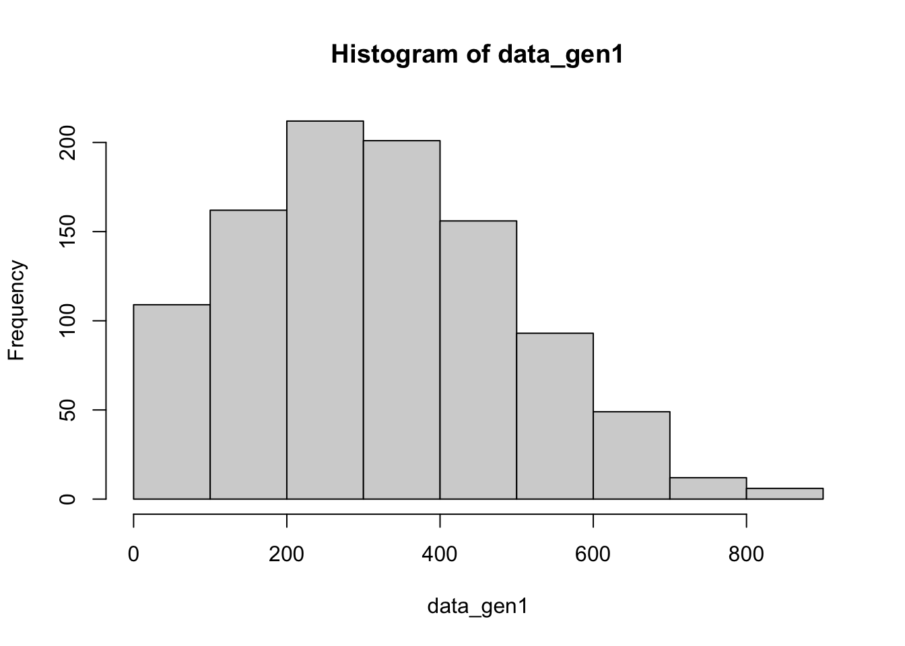

Wrote 1 reference to './references.json'Chapter notes
These notes are based on Nicenboim, Schad, and Vasishth (n.d.), both from a PDF version supplied by the authors and the html version available here (accessed in early 2023). Much of the notes are taken verbatim from the book, as are code snippets.
Nicenboim, Bruno, Daniel Schad, and Shravan Vasishth. n.d. “An Introduction to Bayesian Data Analysis for Cognitive Science.”
Set up
# suppress scientific notation
options(scipen=999)
# load packages
## create list of package names
packages <- c( #"SIN", # this package was removed from the CRAN repository
"MASS", "dplyr", "tidyr", "purrr", "extraDistr", "ggplot2", "loo", "bridgesampling", "brms", "bayesplot", "tictoc", "hypr", "bcogsci", "papaja", "grid", "kableExtra", "gridExtra", "lme4", "cowplot", "pdftools", "cmdstanr", "rootSolve", "rstan"
)
# NB: if you haven't already installed bcogsci through devtools, it won't be loaded
## Now load or install & load all
package.check <- lapply(
packages,
FUN = function(x) {
if (!require(x, character.only = TRUE)) {
install.packages(x, dependencies = TRUE)
library(x, character.only = TRUE)
}
}
)
# this is also required, taken from the textbook
## Save compiled models:
rstan_options(auto_write = FALSE)
## Parallelize the chains using all the cores:
options(mc.cores = parallel::detectCores())
# To solve some conflicts between packages
select <- dplyr::select
extract <- rstan::extract1 Ch. 1 - Intro
- given some data, how to use Bayes’ theorem to quantify uncertainty about our belief regarding a scientific question of interest
- topics to be understood:
- the basic concepts behind probability
- the concept of random variables
- probability distributions
- the concept of likelihood
1.1 Probability
Frequency-based versus uncertain-belief perspective of probability:
- repeatable events, like rolling a die and getting a 6, are frequentist because probability is related to the frequency at which we’d observe an outcome given repeated observations
- one-of-a-kind events, like earthquakes, don’t work with this idea of probability
- the probability of an earthquake expresses our uncertainty about an event happening
- we also be uncertain about how probable an event is: being 90% sure something is 50% likely to happen
- this is what we’re interested in: how uncertain we are of an estimate
In Bayesian analysis, we want to express our uncertainty about the probability of observing an outcome (prior distribution).
1.1.1 Conditional probability and Bayes’ rule
- A = “the streets are wet”
- B = “it was raining”
- P(A|B) = the probability of A given B
- P(A,B) = P(A|B)P(B) (the probability of A and B happening)
1.1.2 Law of total probability
- dunno
1.2 Discrete random variables
Generating random sequences of simulated data with a binomial distribution. Imagine a cloze task, where we consider a particular word a success (1) and any other word a failure (0). If we run the experiment 20 times with a sample size of 10, the cloze probabilities for these 20 experiments would be:
rbinom(10, n = 20, prob = .5)[1] 4 4 5 4 4 5 2 3 5 2 4 2 6 5 5 2 6 5 5 7
For discrete random variables such as the binomial, the probability distribution p(y|\theta) is called a probability mass function (PMF) . The PMF defines the probability of each possible outcome. With n = 10 trials, there are 11 possible outcomes (0, 1, 2,…10 succeses). Which outcome is most probable depends on the parameter \theta that represents the probability of success. Above, we set \theta to 0.5.
1.2.1 The mean and variance of the binomial distribution
In real exerimental situations we never know the true value of \theta (probability of an outcome), but it can be derived from the data: \theta hat = k/n, where k = number of observed successess, n = number of trials, and \theta hat = observed proportion of successes. \theta hat = maximum likelihood estimate of the true but unknown parameter \theta. Basically, the mean of the binomial distribution. The variance can also be estimated by computing (n(\theta))(1 - \theta). These estimates can be be used for statistical inference.
1.2.2 Compute probability of a particular outcome (discrete): dibinom
dbinom calculates probability of k successes out of n given a particular \theta.
dbinom(5, size = 10, prob = .5)[1] 0.2460938dbinom(5, size = 10, prob = .1)[1] 0.001488035dbinom(5, size = 10, prob = .9)[1] 0.001488035With continuous data, the probability of obtaining an exact value will always be zero. We’ll come ot this later.
1.2.3 Compute cumulative probability: pbinom
The cumulative distribution function (CDF): essentially the sum of all probabilities of the values of k you are interested in. E.g., the probability of observing 2 successes or fewer (0, 1, or 2) is:
# sum of probabilities for exact k's
dbinom(0, size = 10, prob = .5) +
dbinom(1, size = 10, prob = .5) +
dbinom(2, size = 10, prob = .5)[1] 0.0546875# or
sum(dbinom(0:2, size = 10, prob = .5))[1] 0.0546875# or use pbinom()
pbinom(2, size = 10, prob = 0.5, lower.tail = TRUE)[1] 0.0546875# conversely, what is the $\theta$ of observing THREE successes or more?
pbinom(2, size = 10, prob = 0.5, lower.tail = F)[1] 0.9453125# or
sum(dbinom(3:10, size = 10, prob = .5))[1] 0.9453125# the probability of observing 10 or fewer successes (out of 10 trials)
pbinom(10, size = 10, prob = 0.5, lower.tail = TRUE)[1] 11.2.4 Compute the inverse of the CDF (quantile function): qbinom
The quantile function (the inverse CDF) obtains the value of k (the quantile) given the probability of obtaining k or less than k successes given some specific probability value p:
# reverse of dbinom(2,10,.5) would be:
qbinom(0.0546875, size=10, prob=.5)[1] 2Generage simulated data from binomial distribtion: rbinom
# given 1 iteration of 10 trials where p = .5, produce a random value of k
rbinom(1, 10, .5)[1] 91.3 Continuous random variables
Imagine vector of reading times data with a normal distribution, defined by its mean and its sd. The probability density function (PDF) for particular values of mean and sd (assuming a normal distribution) can be calculated using dnorm. The CDF can be found using pnorm, and the inverse CDF using qnorm. These are 3 different ways of looking at the infrmation.
# p of observing a mean of 250ms when the true mean is 500 & sd = 100 (PDF)
dnorm(400,mean = 500, sd = 100)[1] 0.002419707# p of observing 400ms *or lower* when the true mean is 500 & sd = 100 (CDF)
pnorm(400,mean = 500, sd = 100)[1] 0.1586553# k with a CDF of 0.1586553 when the true mean is 500 & sd = 100 (inverse CDF)
qnorm(0.1586553, mean = 500, sd = 100)[1] 400Question: what is the probability of observing values between 200 and 700 from a normal distribution where mean = 500 and sd = 100?
pnorm(700,500,100) - pnorm(200,500,100)[1] 0.9759With continuous data, it is only meaningful to ask about probabilities between two point values (e.g., probability that Y lies between a and b).
What is the quantile q such that the probability of observing that value or something less (or more) than it is 0.975 (given the normal(500,100) distribution)?
qnorm(0.975, m=500, sd=100)[1] 695.9964Next task: generate simulated data. generate 10 data points using the rnorm function and use this simulated data to compute the mean and stanrdard devaition.
x <- rnorm(10,500,100)
mean(x)[1] 550.3463sd(x)[1] 79.05702# can also computer lower and upper bounds of 95% CIs
quantile(x, probs = c(.025, .975)) 2.5% 97.5%
448.1318 682.3570 1.3.1 An important distinction: probability vs. densitiy in continuous random variables
The probability density function (PDF):
# density with default m = 0 and sd = 1
dnorm(1)[1] 0.2419707This is not the probability of observing 1 in this distribution, as the probability of a single value in a continous distribtion will always be 0. This is becaue probability in a continuous distritubion is the area under the curve, and at a single point there is no area under the curve (i.e., p = 0). The pnorm function allows us to find the cumulative distribution function (CDF) for the normal distribution.
For example, the probability of obseving a value etween +/-2 in a normal distribution with mean 0 and sd 1:
pnorm(2, m = 0, sd = 1) - pnorm(-2, m = 0, sd = 1)[1] 0.9544997For discrete random variables, the situation is different. These have a probability mass function (PMF), the binomial distribution that we saw before. Here, the PMF maps the possible y values to the probabilities of those exact values occurring.
dbinom(2,size=10,prob=.5)[1] 0.043945311.3.2 Truncating a normal distribution
Refers to positive values only (truncating at 0).
1.4 Bivariate and multivariate distributions
Consider a case where two discrete responses were recorded: a binary yes/no response, and a Likert acceptability rating (1-7).
The joint probability mass function is the joint PMF of two random variables.
Let’s play around with some such data:
# run if package is not loaded
# library(bcogsci)
data("df_discreteagrmt")Marginal distributions
The marginal distribution of each pair of values (let’s say x = the binary response, y = the Likert response) is computed by summing up
rowSums(probs)object probs is not defined in the book
1.4.1 Generate simulated bivariate (multivariate) data
Suppose we want to generate 100 pairs of correlated data, with correlation rho = 0.6. The two random variables have mean 0, and standard deviations 5 and 10 respectively.
## define a variance-covariance matrix:
Sigma <- matrix(c(5^2, 5 * 10 * .6, 5 * 10 * .6, 10^2),
byrow = FALSE, ncol = 2
)
## generate data:
u <- mvrnorm(
n = 100,
mu = c(0, 0),
Sigma = Sigma
)
head(u, n = 3) [,1] [,2]
[1,] -0.8268538 -3.240125
[2,] -2.9766580 -17.185101
[3,] -5.2277669 -12.007005# plot the data
ggplot(tibble(u_1 = u[, 1], u_2 = u[, 2]), aes(u_1, u_2)) +
geom_point()
1.5 An important concept: the marginal likelihood (integrating out a parameter)
1.6 Exercises
1.1 Practice with pnorm Part 1
Given a normal distribution with mean 500 and standard deviation 100, use the pnorm function to calculate the probability of obtaining values between 200 and 800 from this distribution.
pnorm(800, mean = 500, sd = 100) - pnorm(200, mean = 500, sd = 100)[1] 0.99730021.2 Practice with pnorm Part 2
pnorm(700, 800, 150, lower.tail=T)[1] 0.2524925pnorm(900, 800, 150, lower.tail=F)[1] 0.2524925pnorm(800, 800, 150, lower.tail=F)[1] 0.51.3 Practice with pnorm Part 3
pnorm(550,600,200,lower.tail=T)[1] 0.4012937pnorm(800,600,200,lower.tail=T) -
pnorm(300,600,200,lower.tail=T)[1] 0.7745375pnorm(900,600,200,lower.tail=F)[1] 0.0668072Exercise 1.4 Practice using the qnorm function - Part 1
qnorm(c(.1,.9),mean=1,sd=1)[1] -0.2815516 2.2815516Exercise 1.5 Practice using the qnorm function - Part 2
qnorm(c(.1,.9), mean=650, sd=125)[1] 489.8061 810.1939Exercise 1.6 Practice getting summaries from samples - Part 1
data_gen1 <- rnorm(1000, 300, 200)
# mean
mean(data_gen1)[1] 300.7989# sd
sd(data_gen1)[1] 206.6333# q1 and q2
qnorm(c(.1,.9), mean(data_gen1), sd(data_gen1))[1] 35.9877 565.6102hist(data_gen1)
Exercise 1.7 Practice getting summaries from samples - Part 2
# generate data with truncated normal distribution
data_gen1 <- rtnorm(1000, 300, 200, a = 0)
# mean
mean(data_gen1)[1] 331.0684# sd
sd(data_gen1)[1] 179.3631# q1 and q2
qnorm(c(.1,.9), mean(data_gen1), sd(data_gen1))[1] 101.2053 560.9314hist(data_gen1)
Exercise 1.8 Practice with a variance-covariance matrix for a bivariate distribution
2 Ch. 2 - Intro to Bayesian data analysis
- simple but crucial point: the posterior distribution of a parameter is a compromise between the prior and the likelihood
Terms
- posterior, p($theta$|y): probability distribution of the parameters conditional on the data
- likelihood, p(y|$theta$): the PMF or PDF expressed as a function of \theta
- prior, $theta$: the initial probability distribution of paramters before seeing the data
- marginal likelihood, p(y): standardizes the posterior distribution to ensure the AUC sums to 1; it ensure the posterior is a valid probability distribution
2.1 Bayes’ Rule
- Bayes’ rule: when A and B are observable discrete events (like “it has been raining” or “the streets are wet”), we can state the rule as follows:
\begin{equation} P(A\mid B) = \frac{P(B\mid A) P(A)}{P(B)} \tag{2.1} \end{equation}
- given a vector of data y, we can work out the posterior distributions of parameters of interest which we represent as the vector of parameters \theta
- to do this, we can re-write equation 2.1 as 2.2:
\begin{equation} p(\boldsymbol{\Theta}|\boldsymbol{y}) = \cfrac{ p(\boldsymbol{y}|\boldsymbol{\Theta}) \cdot p(\boldsymbol{\Theta}) }{p(\boldsymbol{y})} \tag{2.2} \end{equation}
- now, Bayes’ rule is writen in terms of probability distributions, where p() is the probability density function (continuous) or probability mass function (discrete)
- in words, this simply means:
\begin{equation} \hbox{Posterior} = \frac{\hbox{Likelihood} \cdot \hbox{Prior}}{\hbox{Marginal Likelihood}} \end{equation}
2.2 Deriving the posterior using Bayes’ Rule: an analystical example
participants are shown sentences like It’s raining. I’m going to take the…
if 100 participants complete the sentence, and 80 complete the sentence with bus, the estimated cloze probability would be \frac{80}{100}=0.8
- this is the maximum likelihood estimate of the probability of producing the word; as this is an estimate let’s add a hat: \hat \theta=0.8
in the frequentist paradigm, \hat \theta=0.8 is an estimate of an unknown point value \theta “out there in nature”
N.B., the variability in the estimate will be influenced by the sample size
- if the true value of \theta is really 0.80, we will still get some variability in the estimated proportion from a sample size of say 10 pariticpants
- let’s carry out 100 simulated experiments and compute their variability:
estimated_means <- rbinom(n = 100, # generate 100 random binomial data sets
size = 10, # of 10 obvs each
prob = .8) / 10 # with prob 8, now divide these by 10 to get 100 means (k/n)
# what is the sd of these 100 means?
round(sd(estimated_means),3)[1] 0.133- instead, let’s imagine that \theta is a random variable; i.e., it has a PDF associated with it
- this PDDF would now represent our belief about possible values of \theta before we have any data
- e.g., if we believe from the outset that all possible values between 0 and 1 are equally likely, we would have a uniform prior of \theta \sim \mathit{Uniform}(0,1)
- let’s re-run our simulated experiments, but with two sources of variability: the data and our uncertainty associated with \theta
theta <- runif(100, min = 0, max = 1) # simulate 100 numbers between 0:1
estimated_means <- rbinom( # generate random binomial data that has...
n = 100, # 100x
size = 10, # of 10 obvs
prob = theta # with prob = theta
)/10 # divided by 10 to give us the mean for each
# sd of the means from these 100 'experiments'
round(sd(estimated_means),3)[1] 0.304- the higher standard deviation, representing variability int he estimate of the parameter, comes frm the added uncertainty from the \theta parameter
- what would happen if we had tighter expectations, i.e., a very tight PDF for \theta, say (0.7,0.9)?
theta <- runif(100, min = 0.7, max = 0.9) # simulate 100 numbers between 0:1
estimated_means <- rbinom( # generate random binomial data that has...
n = 100, # 100x
size = 10, # of 10 obvs
prob = theta # with prob = theta
)/10 # divided by 10 to give us the mean for each
# sd of the means from these 100 'experiments'
round(sd(estimated_means),3)[1] 0.137the variability is smaller; so the greater the uncertainty associated with the \theta parameter, the greater the variability in the data
this is very different from the frequentist assumption that \theta is a point value; in Bayesian \theta is a random variable with a probability density/mass function associated with it
this PDF is called a prior distribution and represents our prior belief or knowledge about a possible value of this parameter
once we obtain data, these data serve to modify our prior belief about the distribution, called our posterior distribution
2.3 Choosing a likelihood
- with a binomial distribution like the cloze probability (chose ‘bus’ or not), the PMF can be written as:
\begin{equation} p(k|n,\theta) = \binom{n} {k} \theta^k (1-\theta)^{n-k} \tag{2.3} \end{equation}
- k = the number of times “bus” was given as an answer
- n = the total number of answers given
- if we collect 100 data points (n = 100), and find k = 80, we now have 2 fixed data points, n and k. The only variable is now \theta
\begin{equation} p(k=80 | n= 100, \theta) = \binom{n}{k} \theta^{80} (1-\theta)^{20} \end{equation}
this is now a continuous function of the value of \theta, which can have a possible value between 0 and 1
by contrast, the PMF of the binomial treats \theta as a fixed value and defines a discrete distribution over the n+1 possible discrete values k that we can observe
recall: the PMF and the likelihood are the same function seen from different points of view: the only difference being what is considered fixed (PMF: \theta, likelihood: data) and what is varying (PMF: data, likelihood: \theta)
- PMF: \theta is fixed, data varies
- likelihood function: data is fixed, \theta varies
Now we go back to our main foal: using Bayes’ rule to find out the posterior distribution of \theta given our data: p(\theta*|n,k). We first need to define a prior distribution over the parameter theta, thereby expressing our prior uncertainty about plausible values of \theta
2.4 Choosinga a prior for \theta
priors for a \theta in a binominal distribution: the parameter \theta is a random variable with a PDF whose range is [0,1]
the beta distribution, which is a PDF for a continuous random variable, is commonly used as a prior for parameters representing probabilities, and has the following PDF:
\begin{equation} p(\theta|a,b)= \frac{1}{B(a,b)} \theta^{a - 1} (1-\theta)^{b-1} \tag{2.4} \end{equation}
- B(a,b) is a normalising constant that ensures that the area under the curve sums to 1, so that p(\theta|a,b) is a probability
- the beta distribution’s paramters a and b express our prior beliefs about the probability of a success:
- a = number of “successes” (answering “bus”)
- b = number of “failures” (not answering “bus”)
- the different beta distributions shapes given different values of a and b are shown below (in r, a =
shape1and b =shape2)
plot(function(x)
dbeta(x,shape1=1,shape2=1), 0,1,
main = "Beta density",
ylab="density",xlab="theta",ylim=c(0,3))
text(.5,1.1,"a=1,b=1")
plot(function(x)
dbeta(x,shape1=3,shape2=3),0,1,add=TRUE)
text(.5,1.6,"a=3,b=3")
plot(function(x)
dbeta(x,shape1=6,shape2=6),0,1,add=TRUE)
text(.5,2.8,"a=6,b=6")
plot(function(x)
dbeta(x,shape1=2,shape2=6),0,1,add=TRUE)
text(.15,2.9,"a=2,b=6")
plot(function(x)
dbeta(x,shape1=6,shape2=2),0,1,add=TRUE)
text(.85,2.9,"a=6,b=2")
- to express our uncertainty, we could compute 95% credible intervales, i.e., the region over which we are 95% certain the value of the parameter lies
# compute 95% CrIs
round(
qbeta(# at what quantiles (points on the x-axis)
c(.025,.975), # would the PDF cover 95% AUC
shape1 = 4, # where a = 4
shape2 = 4), # and b = 4
3) # rounded to 3 decimal points[1] 0.184 0.816
Sidebar
- in a unimodal distribution, one could use the narrowest interval that contains the mode (the highest posterior density interval (HDI))
- in skewed posterior distirbutions, the equal-tailed CrI and the HDI will not be identical, because the HDI will have unequal tail probabilities; this book uses the equal-tailed interval (like we computed above) because it’s the standard output in
Stanandbrms
- if we were to choose a = 10 and b = 10, we would still be assuming a prior that “bus” is just as likely as some other word, but now our prior uncertainty about this mean is lower, meaning we have a tighter prior:
# compute 95% CrIs
round(
qbeta(# at what quantiles (points on the x-axis)
c(.025,.975), # would the PDF cover 95% AUC
shape1 = 10, # where a = 4
shape2 = 10), # and b = 4
3) # rounded to 3 decimal points[1] 0.289 0.711- compare the AUC for the two beta distributions in
plot(function(x)
dbeta(x,shape1=4,shape2=4), 0,1,
main = "Beta density",
ylab="density",xlab="theta",ylim=c(0,4))
text(.5,2.35,"a=4,b=4")
plot(function(x)
dbeta(x,shape1=10,shape2=10),0,1,add=TRUE,
ylab="density",xlab="theta",ylim=c(0,4))
text(.5,3.7,"a=10,b=10")
- but which prior should we choose? This depends on our prior knowledge
- if we don’t have much prior information, we could use a = b = 1; this is a uniform prior \mathit{Uniform}(0,1), often clled a flat, non-informative, or uninformative prior
- if we have a lot of prior knowledge or a strong belief regarding the range of plausible values for \theta, we can use a different set of a and b values
- if we were to use a = 4 and b = 4, then our prior for \theta would be:
\begin{equation} p(\theta) = \frac{1}{B(4,4)} \theta^{3} (1-\theta)^{3} \end{equation}